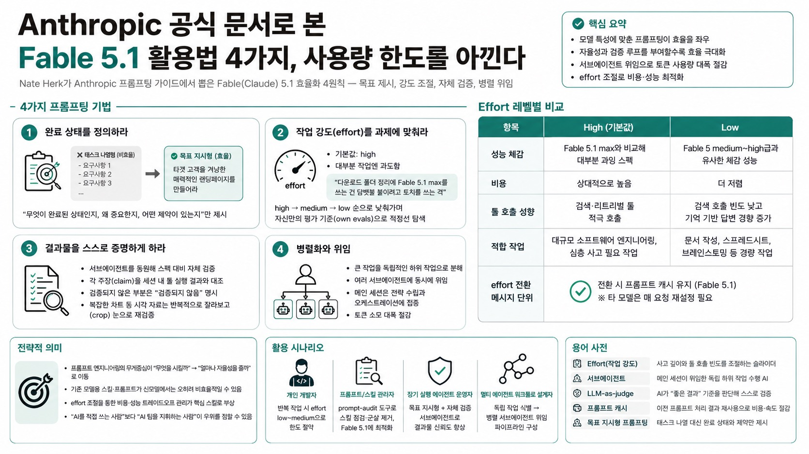

Nate HerkMORNING DIGEST · 2026-09-04 · Nate Herk🎬 영상
Anthropic 공식 문서로 본 Fable 5.1 활용법 4가지, 사용량 한도를 아낀다
Nate Herk가 Anthropic 프롬프팅 가이드에서 뽑은 Fable(Claude) 5.1 효율화 4원칙 — 목표 제시, 강도 조절, 자체 검증, 병렬 위임.

01핵심 개요
Anthropic 공식 "Prompting Claude Fable 5.1" 문서에서 뽑아낸 4가지 실전 팁 소개
effort 슬라이더는 low·medium·high·X high·max·ultra까지 지원, 기본값은 high
Fable 5.1 low 효율은 Fable 5 medium~high급과 비슷하면서 비용은 더 저렴
Fable 5.1은 메시지 단위 effort 전환 시에도 프롬프트 캐시 유지(타 모델은 매 요청 재설정 필요)
저자는 서브에이전트 위임 방식 도입 후 메인 세션 토큰 소모를 크게 절감했다고 언급
02핵심 주장 / 논점 구조
Nate Herk는 "지금 Fable 5.1을 잘못 써서 세션 한도를 순식간에 소진하는 사람이 많다"는 문제의식에서 출발
Anthropic 공식 문서를 근거로 삼아 각 팁마다 원문 인용을 제시하며 신뢰도를 확보하는 구조
핵심 전제: Fable 5.1은 모델별 특성이 다르므로 이전 모델(Fable 5, Sonnet 등)에 쓰던 프롬프트·스킬을 그대로 재사용하면 비효율적일 수 있음
Claude Code 제작자 Boris Cherny의 발언("야심찬 목표를 주고 비켜서라")을 인용해 태스크 지시형에서 목표 지시형으로의 전환을 정당화
결론적으로 "모델에게 얼마나 많은 자율성과 검증 루프를 부여하느냐"가 효율의 핵심 변수라는 논지
034가지 프롬프팅 기법
1. 완료 상태를 정의하라: 개별 태스크 나열 대신 "무엇이 완료된 상태인지, 왜 중요한지, 어떤 제약이 있는지"만 제시. 예시로 장황한 요구사항을 "타겟 고객을 겨냥한 매력적인 랜딩페이지를 만들어라"는 한 문장 목표로 압축하는 장면 시연
2. 작업 강도(effort)를 과제에 맞춰라: high가 기본값이지만 대부분 작업엔 과도함(저자는 "다운로드 폴더 정리에 Fable 5.1 max를 쓰는 건 담뱃불 붙이려고 토치를 쓰는 격"이라는 밈으로 비유). high로 시작해 medium, low 순으로 낮춰가며 자신만의 평가 기준(own evals)으로 적정선을 찾을 것을 권장
3. 결과물을 스스로 증명하게 하라: 서브에이전트를 동원해 스펙 대비 자체 검증을 시키고, 보고 전에 각 주장(claim)을 세션 내 툴 실행 결과와 대조하도록 지시. 검증되지 않은 부분은 명시적으로 "검증되지 않음"이라 밝히게 함. 복잡한 차트 등 시각 자료는 반복적으로 잘라보고(crop) 눈으로 재검증하는 방식이 효과적
4. 병렬화와 위임: 큰 작업을 독립적인 하위 작업으로 쪼개 여러 서브에이전트에 동시에 맡기는 방식. 저자는 최근 메인 세션에는 코딩·리서치를 전혀 시키지 않고 "전략 수립과 서브에이전트 오케스트레이션"만 맡겨 토큰을 대폭 절약하고 있다고 소개
04전략적 의미
프롬프트 엔지니어링의 무게중심이 "무엇을 시킬까"에서 "얼마나 자율성을 줄까"로 이동하고 있음을 보여주는 사례
기존 모델용으로 세밀하게 짜둔 스킬·프롬프트가 신모델에서는 오히려 발목을 잡을 수 있다는 경고 — 모델 세대교체마다 스킬 재점검이 필요한 워크플로 관행을 시사
effort 조절을 통한 비용·성능 트레이드오프 관리가 앞으로 AI 도구 운영의 핵심 스킬로 부상할 가능성
서브에이전트 오케스트레이션(멀티 에이전트 위임) 패턴이 개인 사용자 수준까지 내려오고 있다는 점에서, 향후 "AI를 직접 쓰는 사람"보다 "AI 팀을 지휘하는 사람"이 우위를 점할 수 있음을 시사
05Effort 레벨별 비교
항목
High(기본값)
Low
성능 체감
Fable 5.1 max와 비교해 대부분 과잉 스펙
Fable 5 medium~high급과 유사한 체감 성능
비용
상대적으로 높음
더 저렴
툴 호출 성향
검색·리트리벌 툴 적극 호출
검색 호출 빈도 낮고 기억 기반 답변 경향 증가
적합 작업
대규모 소프트웨어 엔지니어링, 심층 사고 필요 작업
문서 작성, 스프레드시트, 브레인스토밍 등 경량 작업
effort 전환
메시지 단위 전환 시 프롬프트 캐시 유지(Fable 5.1)
동일
06활용 시나리오
개인 개발자: 반복적인 리팩터링·문서 작업 시 effort를 low~medium으로 낮춰 주간 사용량 한도를 절약
팀 프롬프트/스킬 관리자: 기존 모델용으로 세밀하게 짜둔 스킬을 /claw-api prompt-audit 같은 도구로 점검해 Fable 5.1에 맞게 군살을 제거
장기 실행 에이전트 운영자: 작업 지시를 태스크 나열형에서 목표 지시형으로 바꾸고, 자체 검증 서브에이전트를 추가해 결과물 신뢰도를 높임
멀티 에이전트 워크플로 설계자: 독립적으로 쪼갤 수 있는 작업(리서치, 코드 조각, 문서 초안 등)을 식별해 병렬 서브에이전트에 위임하는 파이프라인 구성
07현황 및 전망
Anthropic이 모델 세대별로 별도의 프롬프팅 가이드 문서를 공식 배포하고 있다는 점 자체가, 프롬프트 엔지니어링이 모델 업데이트마다 재검토가 필요한 영역임을 보여줌
저자는 최근 Codex를 더 많이 써왔다고 밝히면서도 Fable 5.1이 "빠르고 효율적"이라 재평가하는 분위기를 전함 — 모델 간 경쟁이 사용자 습관에도 영향을 미치는 흐름
서브에이전트 위임과 자체 검증 루프가 결합되면 사용량 한도 문제와 결과물 품질 문제를 동시에 완화할 수 있다는 것이 영상의 핵심 결론
앞으로 "효율적인 AI 활용법"에 대한 정보는 벤더 공식 문서(Anthropic 독스)를 1차 소스로 삼아 검증하는 습관이 중요해질 전망
08용어 사전
Effort(작업 강도): Claude 모델의 사고 깊이와 툴 호출 빈도를 조절하는 슬라이더. low/medium/high/X high/max/ultra 단계로 구성
서브에이전트(sub agent): 메인 세션이 위임한 독립적인 하위 작업을 수행하는 보조 AI 에이전트. 병렬로 여러 개 동시 운용 가능
LLM-as-judge: 객관적 정답이 없는 출력물에 대해, 사람이 정의한 "좋은 결과"의 기준을 AI가 스스로 판단 기준 삼아 검증하는 방식
프롬프트 캐시: 이전 대화의 프롬프트 처리 결과를 재사용해 비용·속도를 절감하는 기능. Fable 5.1은 effort를 메시지 단위로 바꿔도 이 캐시가 유지됨
목표 지시형 프롬프팅: 세부 태스크를 일일이 지정하지 않고 "완료된 상태"와 제약조건만 제시해 모델이 스스로 실행 계획을 세우게 하는 프롬프트 설계 방식